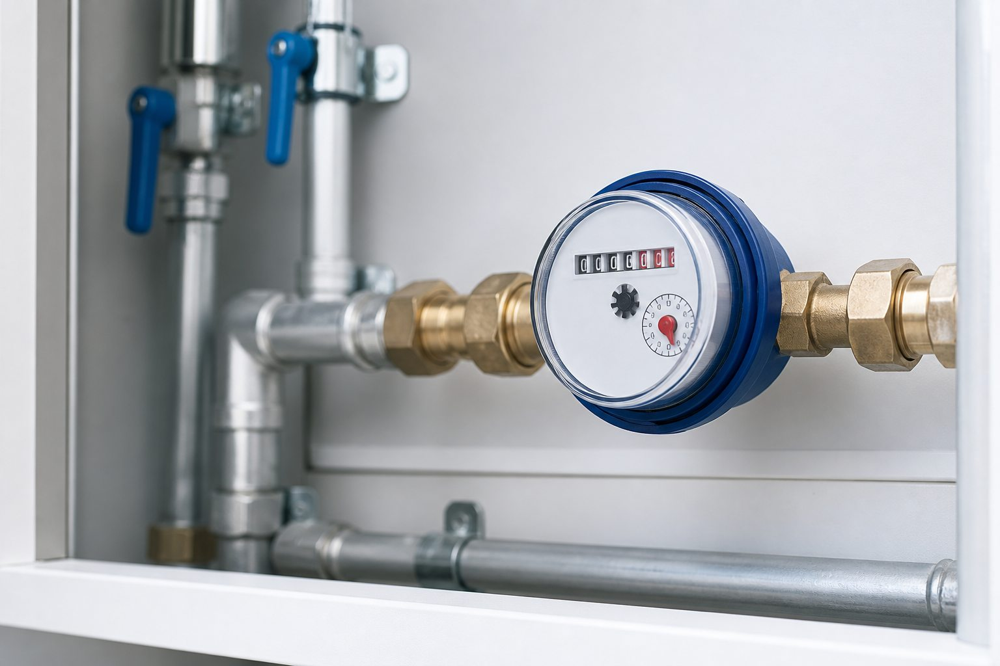
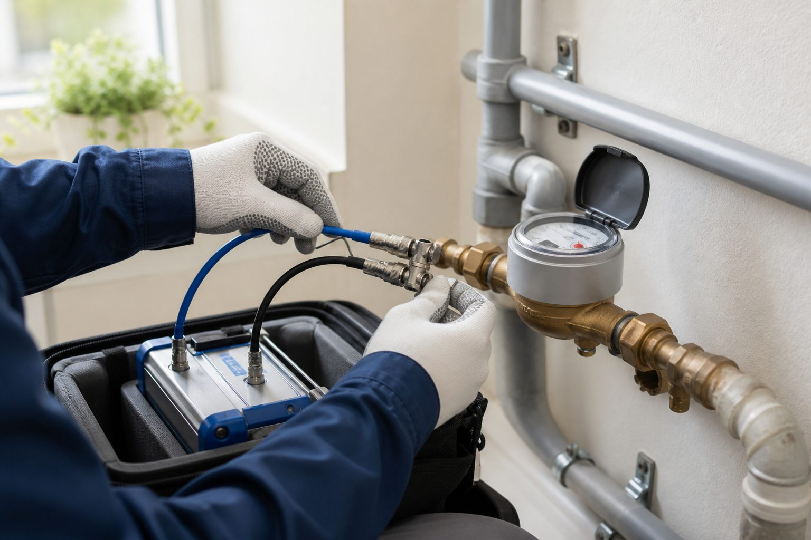
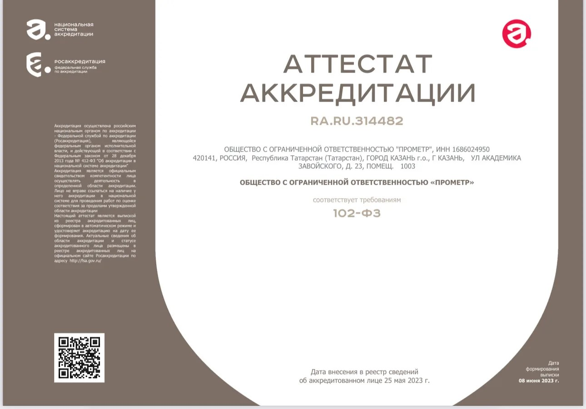

В квартире
Поверка водосчетчика по месту установки без самостоятельного демонтажа.
1000 ₽
Поверка водосчетчиков на дому — без снятия и поездки в лабораторию.

Условия и стоимость зависят от типа помещения и количества счетчиков.
Поверка водосчетчика по месту установки без самостоятельного демонтажа.
Учитываем особенности доступа к прибору и его установки.
Выгодная цена при одновременной поверке нескольких приборов.
Сообщите адрес и количество счетчиков — согласуем доступное время выезда.
Своевременная поверка подтверждает соответствие прибора установленным метрологическим требованиям.

Для записи подготовьте адрес, количество счетчиков и информацию о помещении.
Сообщите адрес и количество приборов.
Оператор уточнит условия и доступное время.
Специалист проверяет прибор без снятия.
Сведения оформляются в установленном порядке.
Цена зависит от места установки и количества приборов.
Поверка одного водосчетчика по месту установки.
Поверка прибора учета воды в частном доме.
Стоимость за каждый прибор при одновременной поверке.
Точная стоимость, возможность и время выезда подтверждаются оператором при записи.

Реквизиты организации и изображение аттестата доступны прямо на сайте.
Ответы об услуге, стоимости и подготовке к визиту.
Остались вопросы? Позвоните →Обычно поверка проводится по месту установки без демонтажа, если состояние прибора и условия позволяют выполнить работу.
Квартира — 1000 ₽, частный дом — 1200 ₽, от четырех счетчиков — 900 ₽ за каждый.
Адрес, тип помещения, количество счетчиков и удобный период для визита.
Обеспечьте свободный доступ к счетчику и соединениям.
Да. Для четырех и более приборов действует специальная стоимость.
ООО «ПРОМЕТР», ИНН 1686024950, номер аккредитации RA.RU.314482.
Позвоните — уточним детали и согласуем доступное время выезда.